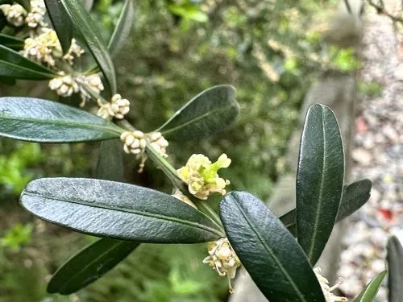

灌木与花木 · 植物界
雀舌黄杨 Buxus bodinieri

黄杨科黄杨属常绿灌木，叶片细小如雀舌、四季常青，耐修剪、易造型，是制作盆景与绿篱的传统树种。
- 分类
- 门被子植物门纲木兰纲目黄杨目科黄杨科属黄杨属
- 栖息环境
- 海拔 1000–2000 米的山地林下与溪边，喜温暖湿润半阴
- 地理分布
- 中国云南、贵州、四川、湖北、湖南、广西等地
- 保护级别
- 暂无评估；未被列入国家重点保护野生植物名录
物种志
雀舌黄杨为黄杨科黄杨属常绿灌木，高一至二米，分枝密集，小枝具四棱。叶片对生，革质，匙形至倒披针形，先端圆钝或微凹，形似雀舌，表面深绿有光泽。花单性，雌雄同株，簇生于叶腋，花小，黄绿色，无花瓣，花期三至四月；蒴果球形，成熟时褐色开裂，果期六至七月。
雀舌黄杨分布于中国云南、贵州、四川、湖北、湖南、广西等地，多生于海拔一千至两千米的山地林下和溪边。它喜温暖湿润和半阴环境，耐修剪、耐瘠薄，适宜疏松肥沃、排水良好的酸性土壤，生长缓慢。叶小常青、枝干苍劲，是制作树桩盆景和造型绿篱的优良材料；木材细致，可制雕刻和文具。雀舌黄杨寿命长，百年老桩仍能萌发新枝，被视为盆景中的珍品。
形态与习性
- 株高1–2 m，分枝密集
- 花期3–4 月，花小、黄绿色
- 果期6–7 月，蒴果球形
- 光照喜半阴，也耐散射光
- 水分喜湿润，忌积水
- 土壤疏松肥沃的酸性土
- 主要用途盆景、造型绿篱，木材雕刻
趣味知识
- 雀舌黄杨的叶片小而狭长，先端圆钝，形状像麻雀的舌头。
- 它生长极慢，一根拇指粗的枝干往往需要几十年才能长成。
- 雀舌黄杨是川派和扬派盆景的传统树种，老桩苍劲、四季可赏。